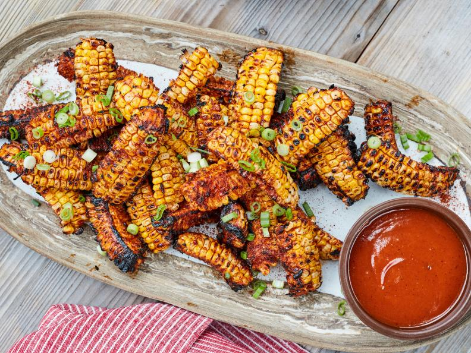
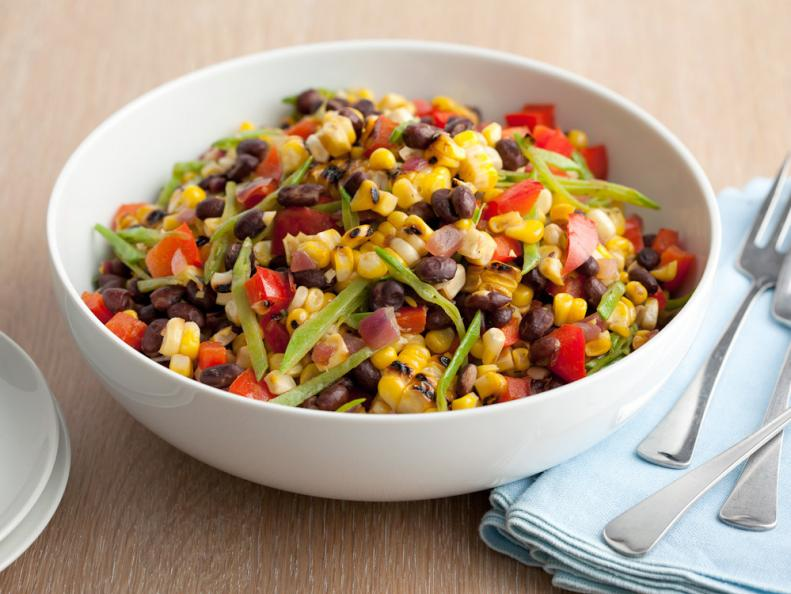
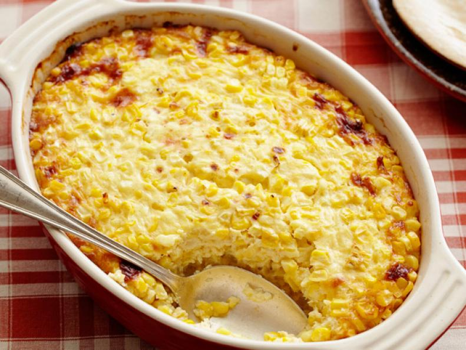

Delicious Corn Recipes
Explore our favorite corn-based recipes that bring out the rich, sweet, and savory flavors of this amazing ingredient. Whether you're grilling, tossing, or baking, there's something for everyone!
Grilled Barbecued Corn Ribs
Ingredients:
- 4 large ears of corn
- 1/4 cup barbecue sauce
- 1 tablespoon olive oil
- Salt and pepper to taste
- 1/4 cup chopped cilantro (optional)
Instructions:
- Preheat your grill to medium heat.
- Cut the corn into rib-like pieces (about 4-5 ribs per ear of corn).
- Brush the corn ribs with olive oil and season with salt and pepper.
- Grill the corn ribs for about 10-15 minutes, turning occasionally until charred.
- Brush with barbecue sauce during the last few minutes of grilling.
- Serve with a sprinkle of chopped cilantro and enjoy!
Esquites-Inspired Summer Pasta Salad

Ingredients:
- 1 pound pasta (preferably elbow macaroni or penne)
- 2 cups cooked corn kernels (fresh or frozen)
- 1/4 cup mayonnaise
- 1 tablespoon lime juice
- 1/4 teaspoon chili powder
- 1/4 cup chopped cilantro
- 1/4 cup crumbled queso fresco
- Salt and pepper to taste
Instructions:
- Cook the pasta according to package instructions. Drain and set aside to cool.
- In a large bowl, combine the pasta, corn, mayonnaise, lime juice, and chili powder.
- Stir in cilantro and queso fresco.
- Season with salt and pepper to taste and refrigerate for 30 minutes before serving.
Black Bean and Corn Salad
Ingredients:
- 1 can black beans, drained and rinsed
- 2 cups corn kernels (fresh, frozen, or canned)
- 1 red bell pepper, diced
- 1/4 cup red onion, finely chopped
- 1/4 cup fresh cilantro, chopped
- 1 tablespoon lime juice
- Salt and pepper to taste
Instructions:
- In a large bowl, combine black beans, corn, bell pepper, red onion, and cilantro.
- Add lime juice and season with salt and pepper.
- Toss gently and refrigerate for 30 minutes to allow flavors to meld.
- Serve chilled as a side dish or a light lunch!
Sweet Corn Pudding
Ingredients:
- 2 cups fresh or frozen corn kernels
- 1/2 cup heavy cream
- 1/4 cup sugar
- 3 large eggs
- 1 tablespoon cornstarch
- 1/4 teaspoon salt
- 1/4 teaspoon ground cinnamon
- 1/2 teaspoon vanilla extract
Instructions:
- Preheat the oven to 350°F (175°C).
- In a blender, combine corn, heavy cream, sugar, eggs, cornstarch, salt, cinnamon, and vanilla.
- Blend until smooth, then pour the mixture into a greased baking dish.
- Bake for 35-40 minutes, or until set and golden on top.
- Allow to cool slightly before serving as a delicious side dish or dessert!